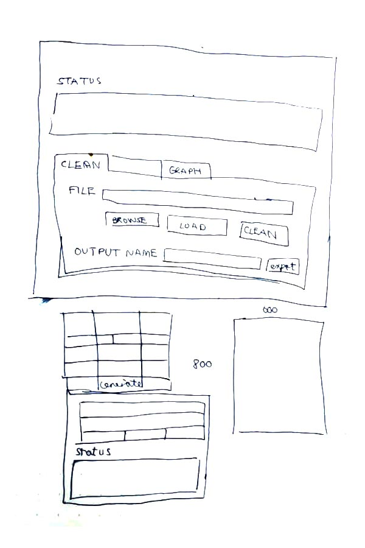
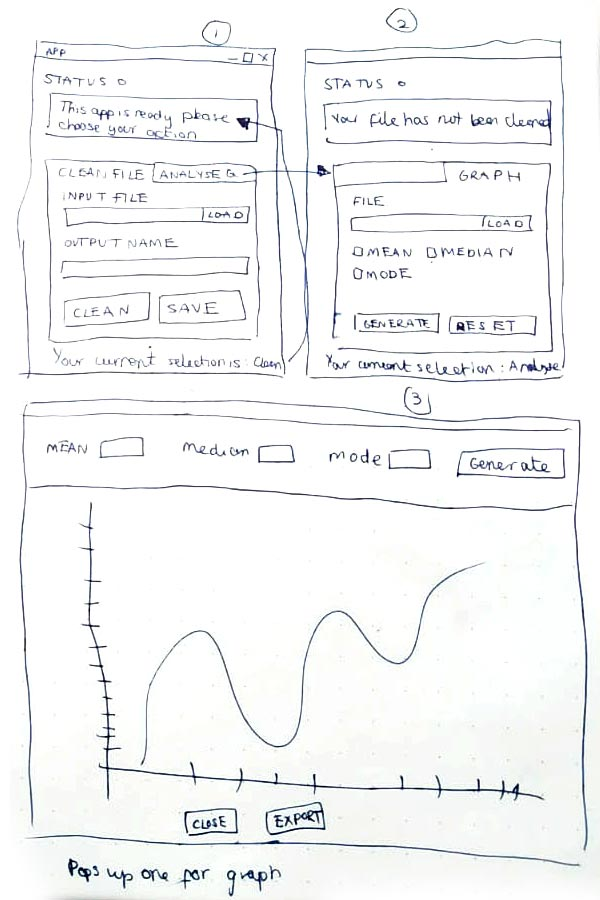

This is a prototype application built in Python with a GUI built in Tkinker to prompt user to load a
dataset, clean it and then export it as a JSON. The GUI was built to make it easier to wrangle data ready
to load for visualiations.
The client initially needed the program to generate the mean, mode and median for the inspection score per
year for each type of vendor’s seating and for each ‘zip code’ therefore these functions were built into
the visualiation tool.
Furthermore, the client wanted a way to save the cleaned file and enter their own file name.
This overview diagram shows how the flow of application will be used from loading to exporting. It was gathered that perhaps two separate applications may be need: clean, parsing the data and then loading the data to produce graph visualisations. The application would also benefit from concurrency due to simultaneous tasks needing to be run. First Jupyter Notebooks was used to clean and wrangle the data then the most efficient cleaning methods were chosen for program.
Python Pandas library was used to load the data into a DataFrame as this made it easy to quickly view, manipulate and inspect the data closely and easily convert from .csv to DF. Using the print and input functions allowed the user to enter the file names manually.
import pandas as pd
import numpy as np
# missing values
missing_values = ["NA", "N/A", "na", r"^\s*$", "", " ", "NaN"]
columns = 'columns'
# ----- IMPORT CSV FILES ---- #
print("Hello welcome to the data cleaning tool. Please upload your files:")
inventory_file = input("Please enter the full file location for the inventory file:")
violation_file = input("Please enter the full file location for the violation file:")
inspection_file = input("Please enter the full file location for the inspection file:")
inventory = pd.read_csv(inventory_file, keep_default_na=False, na_values=missing_values)
violation = pd.read_csv(violation_file, keep_default_na=False, na_values=missing_values)
inspection = pd.read_csv(inspection_file, keep_default_na=False, na_values=missing_values)
View Github File
On inspection there were lots of multiple variants of words, differing cases, spaces, dashes and extra punchuation. Furthermore, there were 3 different data files needing to be cleaned and merged. Therefore cleaning functions were developed so they can be used multiple times on different datasets and to create consistency amongst the data for easier wrangling.
# ---- CLEAN FILE ---- #
def clean(df):
# Dropping data with over 50% null to avoid errors
print("...10% Dropping empty cells")
df.dropna(inplace = True)
# Replace NaN, missing values etc with 0
df.fillna(0)
print("...20% Neatening missing values")
print("...30% Stripping spaces")
# Regex finds spaces 2 or more & changes to 1 and strips space before/after
df.columns = [col.strip().replace(' ', ' ') for col in df.columns]
print("...40% Converting all to uppercase")
df.columns = [x.upper() for x in df.columns]
# print(csv_df.columns) to check if it works :)
if "PE DESCRIPTION" in df:
print("...60% Slicing out & cleaning seating column")
# Seating numbers only
new_seat_col = df['PE DESCRIPTION'].str.extract('.*\((.*)\).*') # print(new_seat_col)
# Remove seating numbers leave behind rest
df['PE DESCRIPTION'] = df['PE DESCRIPTION'].str.replace(r" \(.*\)","") # print(pe_list)
# New headers
df['SEATING'] = new_seat_col
# Remove Alpha, Commas, Full stop and Spacing
df['SEATING'] = df['SEATING'].str.replace('[a-zA-Z,. ]', '')
# '/^[a-zA-Z0-9,\.\s]*$/'
# [a-zA-Z]
if "SCORE" in df:
print("...70% Converting to correct data types")
df["SCORE"] = df["SCORE"].apply(np.int64)
if "ZIP CODES" in df:
print("...80% Cleaning last bits")
df["ZIP CODES"] = df["ZIP CODES"].apply(np.int64)
# int_df = df["ZIP CODES"].astype(int)
if "ACTIVITY DATE" in df:
print("...90% Formatting dates")
df['ACTIVITY DATE'] = pd.to_datetime(df['ACTIVITY DATE'], format='%m/%d/%Y')
print("...100% Done!")
print(df.head(5))
# print(df.head(5))
return df
def second_clean(df):
print("...Implementing a second clean")
if "PROGRAM STATUS" in df:
print("...30% Removing inactive accounts")
df = df[df['PROGRAM STATUS'] != 'INACTIVE']
if "ACTIVITY DATE" in df:
print("...60% Formatting dates")
df['ACTIVITY DATE'] = pd.to_datetime(df['ACTIVITY DATE'], format='%m/%d/%Y')
# this returns only the year
df['ACTIVITY DATE'] = df['ACTIVITY DATE'].dt.year
if "SERIAL NUMBER" and "FACILITY ID" in df:
print("...90% Drop duplicates")
df = df.drop_duplicates(subset=['ACTIVITY DATE', 'FACILITY ID', 'SERIAL NUMBER'], keep='last')
print(".. 100% Second clean done!")
return df
View Github File
The next focus was to reformat/export as a JSON. As the dataset contain over 100,000 isntances JSON file
was used
because of the low cost of data usage and high parsing speeds. It was decided that all files would be
merged into 1 datafile that contained only the useful attributes for the descriptive statistics and
visualisations. The rest were
removed
I needed a way of importing the cleaned JSON file to do some descriptive statistics, selecting only
relevent headers to find the mean, median, mode and standard deviation. Therefore the input print function
was used again to allow the user to input the dataset file location.
# ---- EXPORT AS JSON ---- #
def export_json(file, type):
try:
file_name = input("Please enter a file name you'd like to use:")
new_json_name = file_name + ".json"
file.to_json(new_json_name, index='true', orient=type)
except NameError:
print("You have not loaded or cleaned your files to export yet!")
# ----EXPORT TO JSON ----- #
export_json(df4_cleaned, columns)
print("Congratulations, your data has been clean and exported into the same folder")
import pandas as pd
import numpy as np
columns = 'columns'
df1_mode = lambda x:x.value_counts().index[0]
# ---- READING JSON FILE ---- #
# Users/bexa/Documents/Compsci/Advanced Programming/Summative/facilities.json
# ask user for json file location
enter_json = input ('Please enter the file location of your cleaned JSON file:')
# read as pandas dataframe
df1 = pd.read_json(enter_json)
View Github File
To produce descriptive statistics the data needed to be wrangled into suitable DataFrame. Groupby function was used to group the necessary attributes and then Aggregate function was used to find the mean, median, mode and standard deviation.
# ---- SEATING MEAN, MEDIAN, MODE SCORE ----- #
# making grouped by activity date first, then seating
grouped = df1.groupby(['ACTIVITY DATE', 'SEATING'])
# make activity date by YEAR
# using score to calculate
group_df1 = grouped['SCORE']
# Calculating Mode by using value counts then finding the first value in row
# calculating mean, median
df1_mean = group_df1.agg([('MEAN', 'mean'), ('MEDIAN','median'), ('MODE', df1_mode)])
# turn mean/median/mode groupby table into DataFrame
df1_1 = pd.DataFrame(df1_mean)
print(df1_1)
# ---- ZIP CODES MEAN, MEDIAN, MODE SCORE ----- #
# making grouped by activity date first, then seating
grouped = df1.groupby(['ACTIVITY DATE', 'ZIP CODES'])
# using score to calculate
group_df2 = grouped['SCORE']
# Calculating Mode by using value counts then finding the first value in row
# calculating mean, median
df2_mean = group_df2.agg([('MEAN', 'mean'), ('MEDIAN','median'), ('MODE', df1_mode)])
# turn mean/median/mode groupby table into DataFrame
df2_1 = pd.DataFrame(df2_mean)
print(df2_1)
View Github File
The client needed a way to input the datafiles visually and clean the data therefore using input fields, upload files dialog and buttons was best practise to minimise errors and reduce complication of entering incorrect data. This way the user will only be able to select from given options and load files available on the desktop.
 
After initial wireframes drawn. Feedback showed that more input fields needed to be added for the different data files to make it more intuitive for the end user to know which needed to uploaded and where. Furthermore, buttons to load the different functions like clean and export made sense so the user had more control. A status bar, that would show green message to verify and red message to denote errors, was also later added to provide continuous feedback to user.
Tkinter provides a variety of widgets that I needed such as labels, buttons, input fields and checkboxes which were in the GUI wireframes. Furthermore Tkinker has a file dialogue function that can pop-up on click to source files, close the window, provide extra window functionality options. It also was the fastest way to implement the program with a GUI to create a prototype test.
import tkinter as tk
import pandas as pd
import numpy as np
import matplotlib.pyplot as plt
import matplotlib.cbook as cbook
import json, os
from tkinter import ttk
from tkinter import *
from tkinter.filedialog import asksaveasfile
from tkinter.filedialog import asksaveasfilename
from tkinter import filedialog
from tkinter import messagebox
from datetime import datetime
# ------ GLOBAL VARIABLES ------ #
# Change missing values to NaN for consistency
missing_values = ["NA", "N/A", "na", r"^\s*$", "", " ", "NaN"]
# counts value then finds the one that appears the most time (mode)
df1_mode = lambda x:x.value_counts().index[0]
# Changes to true once file clean has been done at least once
file_cleaned = False
# creating instance of Tk class
window = tk.Tk()
window.title("DATA ANALYSIS TOOL")
# disable windows from resizing
window.resizable(False, False)
# window sizing
window_height = 450
window_width = 500
screen_width = window.winfo_screenwidth()
screen_height = window.winfo_screenheight()
# Places window in middle of screen
x_cordinate = int((screen_width/2) - (window_width/2))
y_cordinate = int((screen_height/2) - (window_height/2))
window.geometry("{}x{}+{}+{}".format(window_width, window_height, x_cordinate, y_cordinate))
# Adding Tabs to window
tab_control = ttk.Notebook(window)
cleaning_tab = ttk.Frame(tab_control)
graph_tab = ttk.Frame(tab_control)
# Adding text to tab and styling
tab_control.add(cleaning_tab, text="1. Clean Data")
tab_control.add(graph_tab, text="2. Generate Graph")
tab_control.pack(expand=1, fill="both")
View Github File